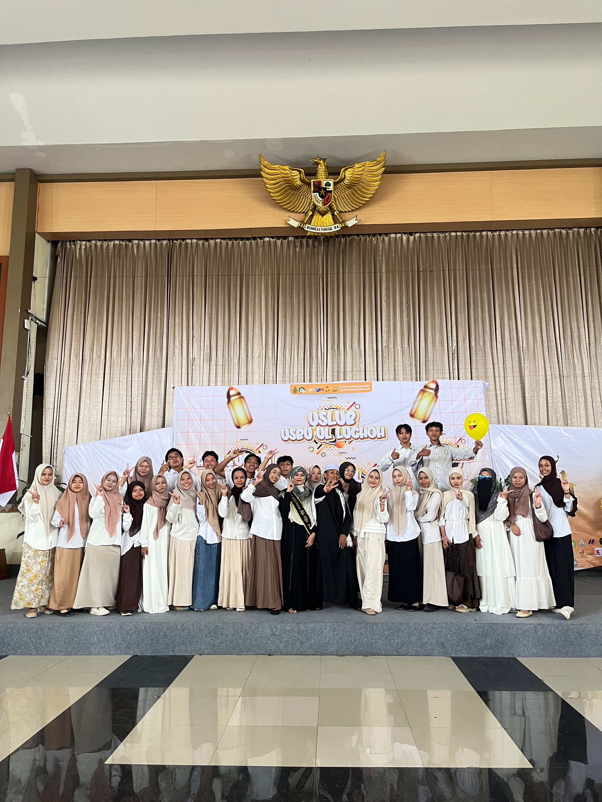
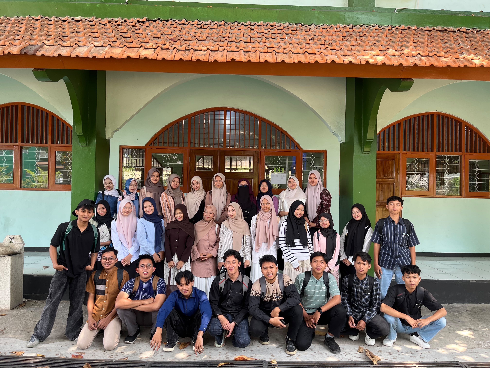
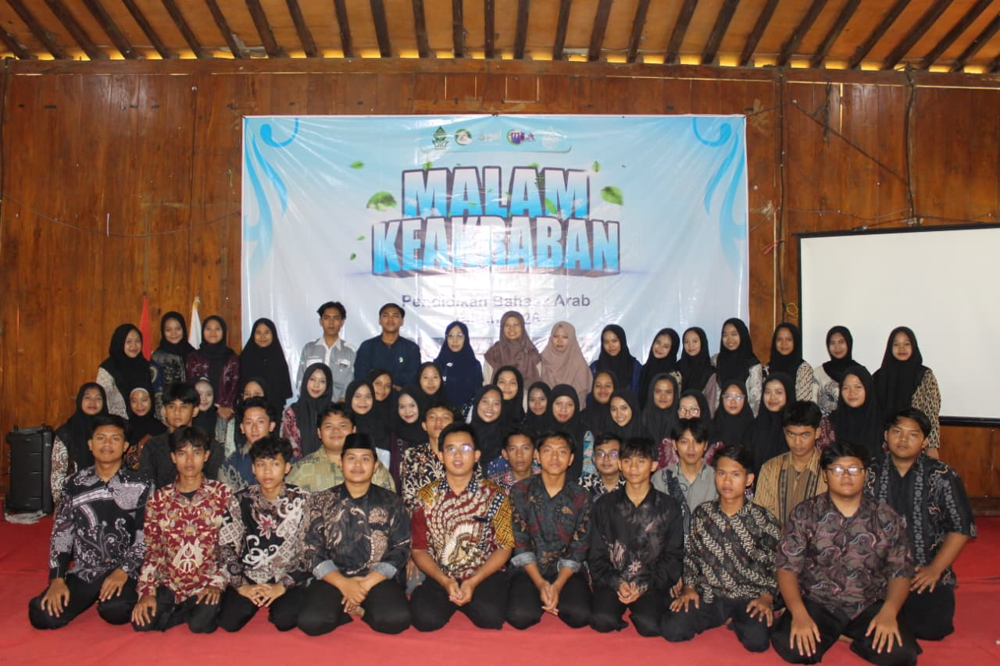
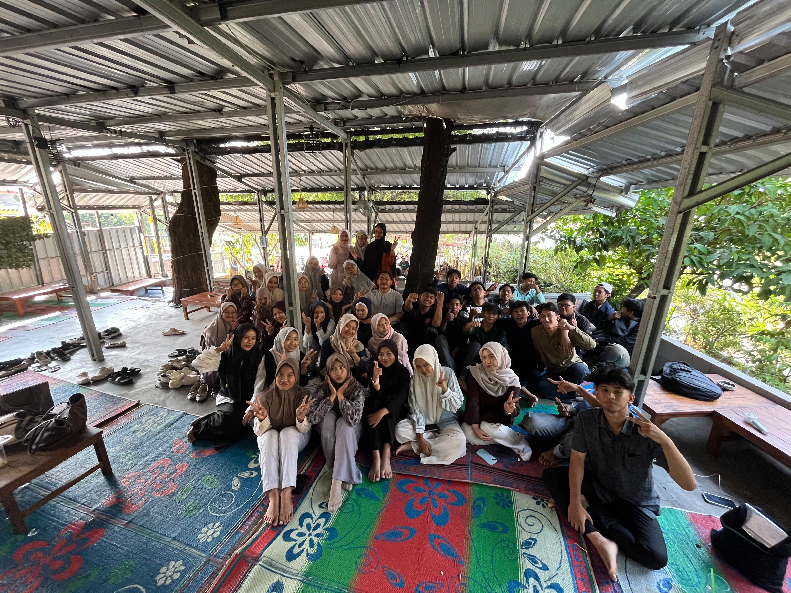
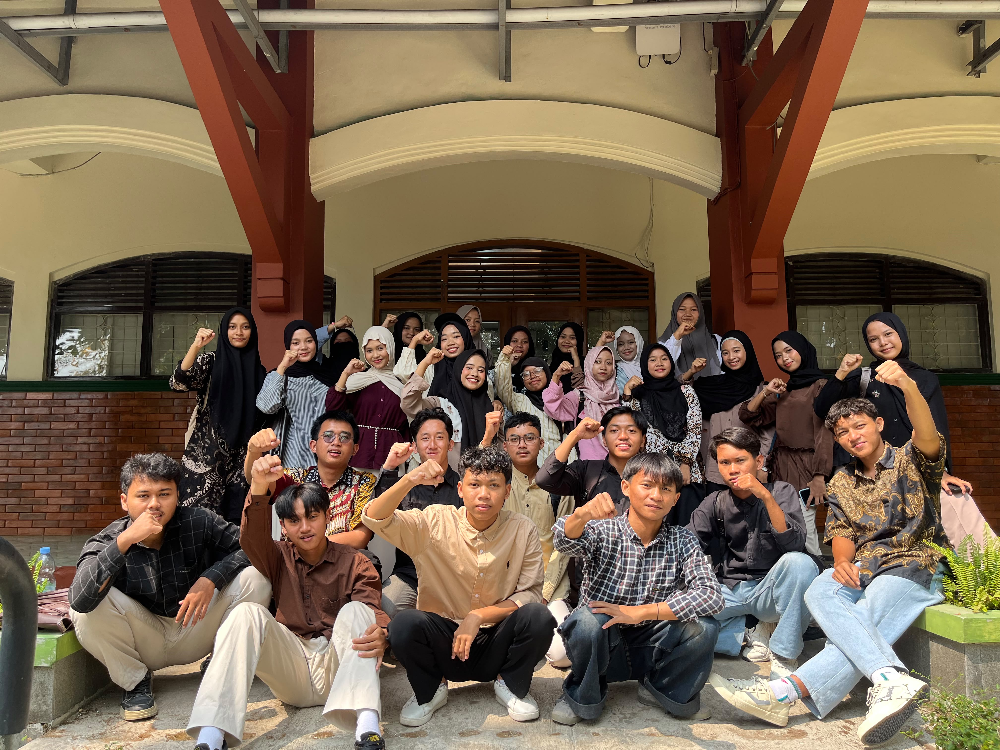

Solid, Berkarakter, dan Bersama Meraih Kesuksesan Dunia Akhirat!
Pengurus inti yang amanah dan siap membawa kelas lebih kompak.
Aleksa Wahyu
Ahmad Tegar Jaylani
Nur khazizah putri
Dian Ramadhani
Muhammad Sofiyullah
Faris Risqi
Miftahul alim
Ahmad Tegar Jaylani
Nur Khazizah Putri
Atur waktu belajarmu dengan melihat jadwal kegiatan kelas.
| Hari | Jam | Mata Kuliah | Ruangan |
|---|---|---|---|
| Senin | 07.00 - 10.20 | Al Arabiah At takamuliah & Ilm 'Aswat | D.12 & K.2 |
| Selasa | 07.00 & 12.50 | Al Arabiah At takamuliah & Bahasa Indonesia | K.2 & D.1 |
| Rabu | 07.00 & 12.50 | Tauhid Dan Akhlak Tasawuf & Istima' Wal Hiwarat | D.12 & D.1 |
| Kamis | 8.40 | PPKN | D.12 |
Momen-momen berharga dan kebersamaan keluarga besar Aarabic Society.

Duta Akhi Ukhti 2026

Foto Bersama

Makrab PBA 26

Kumpul Angkatan 26

Aarabic Society Gank